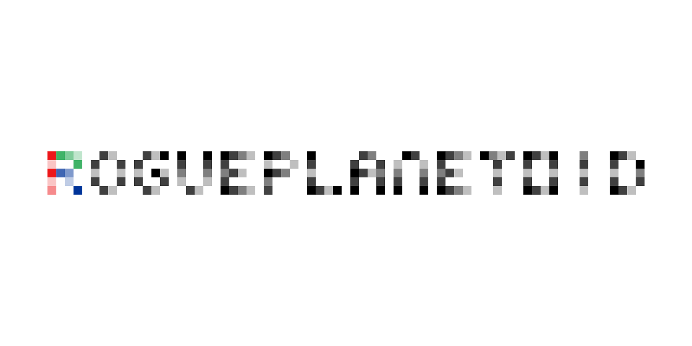
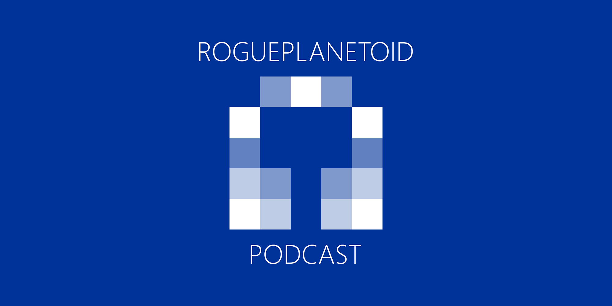

RoguePlanetoid Weekly Update #63
28th July 2024

This week I decided to change what I was working on to a long-form Presentation that I'll hopefully be able to present in the future. I will be looking
at doing more Talks for tutorialr.com with another three covering .NET MAUI & Uno Platform
along with Blazor and an updated one about Spotify for Developers. Later this year will be working on more Tutorials for
Windows App SDK so there's still plenty of things to add there along with creating that new Presentation!
This week I was at Silicon Mingle, which I also wrote an Article about,
which was another great opportunity to catch up with many people I know from previous events as well as meeting new people. It is great to see an event like this in the
North East of England as there was a great need for an event like this not just from those organising it but also those attending such as myself.
I also attended The Mussel Club, which also included writing an Article
about it, which is a networking event for businesses in the North East of England. It is great to be able to add new events to the tech events I had been attending and hope
to go along to many more in the future!
Next week I will be at .NET Meetup - Newcastle with talks by John Staveley on Demystifying gRPC and Rob Boville
on Hyperscale SaaS Solutions, AI Implementations. I'm looking forward to going along and hearing from both talks there as it is always great to see people
presenting as well as present talks myself. The next Episode of the RoguePlanetoid Podcast will be about Presenting
where I talk about my introduction and some of my journey with presenting as well as some useful tips that will hopefully help and encourage the next generation of speakers
I hope to see at an event in the future presenting about a topic that interests them and informs me.
RoguePlanetoid Weekly Update #62
21st July 2024
This week I was visited the Podcast Studio at Flok Co-working Space in Middlesbrough. It was a great
opportunity to have a look around and have a tour of the place and would like to thank Danni for taking the time to show us around which helped with putting together
information for anyone, including myself, who will be using the Podcast Studio in the future!
This week was also a chance to go along to the Platform event this month in Newcastle, not only to see people speak there
and write an Article about the event, but also to be amongst them talking about Cluarantonn
where we aim to build a community to support new and existing podcasters and connect them with small businesses and freelancers to help them where needed.
It was a great opportunity to speak and my very first presentation where I didn't use any notes whatsoever as I'd been looking forward to the chance to be able to
do that and was great that it was doing that to pitch our new business.
Next week I'll be getting the next Episode of the RoguePlanetoid Podcast about Presenting ready for being
published on 1st August, but this week it was also great to see mention of the latest Episode about the North East Tech Scene
in the Newcastle Tech Digest. I'll be able to make more progress with the next Talk
tutorialr.com about .NET MAUI and Uno Platform which I aim to release either this month or next.
RoguePlanetoid Weekly Update #61
14th July 2024
This week I was at the Newcastle Networking by FSB and HSBC event along with attending the
5G & Beyond: Boosting North East Business Growth webinar. It was great to get along to another networking event
as well as the webinar to find out about Newcastle's new 5G Innovation Lab which will be opening soon and of course wrote an Article about
both events.
This week was also a chance to look into a few things for the future as well as a chance to fully recover from not being well the past few weeks but pleased to
be back to normal so can then prepare for some up coming things I'll either be involved with or working on this month.
Next week I'll be at Platform in Newcastle on Friday where I'll be talking about Cluarantonn which helps people get started with podcasting, helps them on their
journey as well as getting them support from small businesses or freelancers. I'll also aim to continue the upcoming next Talk for
tutorialr.com about .NET MAUI and Uno Platform.
RoguePlanetoid Weekly Update #60
7th July 2024
It is great to reach the sixtieth Weekly Update but the last couple of weeks didn't quite turn out as expected as was not
feeling well so ended up not doing anything that I planned on doing that week and the previous week which included releasing
this month's Episode of the RoguePlanetoid Podcast on time for the very first time
as my voice just wasn't up to it! However, last week has been an opportunity to rest and recuperate instead so was ready for
this week where I could tackle many of the things I had to put off!
This week I was able to record the latest Episode of the RoguePlanetoid Podcast about the
North East Tech Scene as I had recovered enough to do it and didn't want people waiting too long,
but you can probably hear my voice isn't quite the same as usual in a few places but it is still nice and clear to listen to! It was great to
speak about the history of the region with a few historical facts about lightbulbs, bridges over the River Tyne and my being one of the first
people on the Tyne and Wear Metro when I just was a few months old - I wasn't able to be in my pram as those weren't allowed on at the time but
many parents were able to campaign against it, so it was left in the station but was safe and sound for my return when we got back.
Next week will be good to get back to normal and get along to events again, I had to miss so many events after TechNExt I would
have been able to get along to so will be good to go along to some this month. I'll make a start on the next Talk for
tutorialr.com which will cover .NET MAUI and Uno Platform
along with continuing something I can't talk about just yet but looking forward to the future and putting myself first and making sure that I find
the right things for me and continue to do the things I'm passionate about and share what I can with the community and share what is going on in
the community when I can too.
RoguePlanetoid Podcast - Episode Eighteen - North East Tech Scene
7th July 2024

Today sees the release of Episode Eighteen that was Delayed of the RoguePlanetoid Podcast
about North East Tech Scene, North East England's thriving tech scene is
unfortunately often overlooked by the rest of the United Kingdom and most likely elsewhere
You will find the Podcast where you listen to your podcasts such as Spotify,
Amazon Music, RadioPublic, Apple Podcasts, Pandora,
YouTube Music along with YouTube where you can catch up with previous episodes
and Subscribe or Follow so you don't miss any future Episodes.